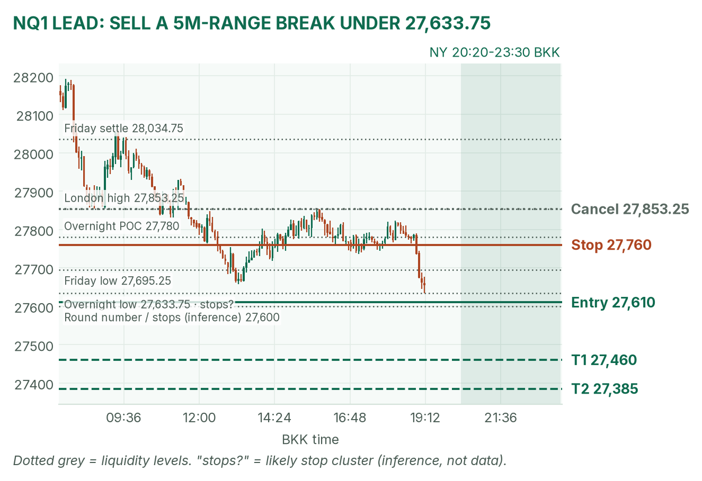
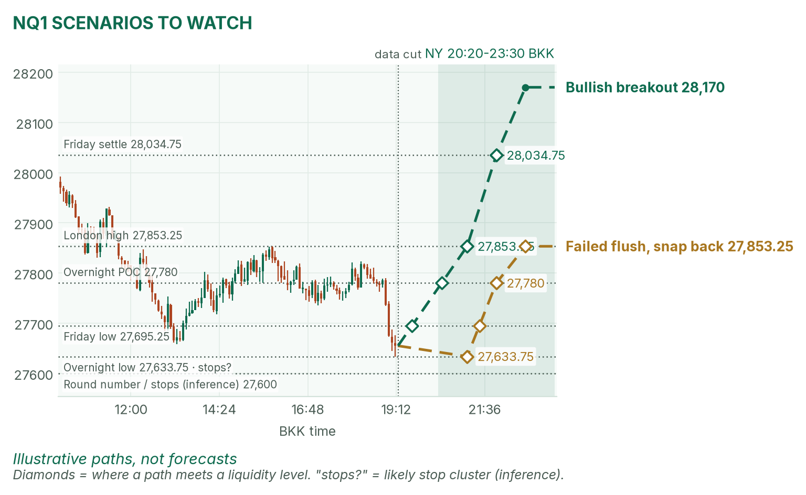
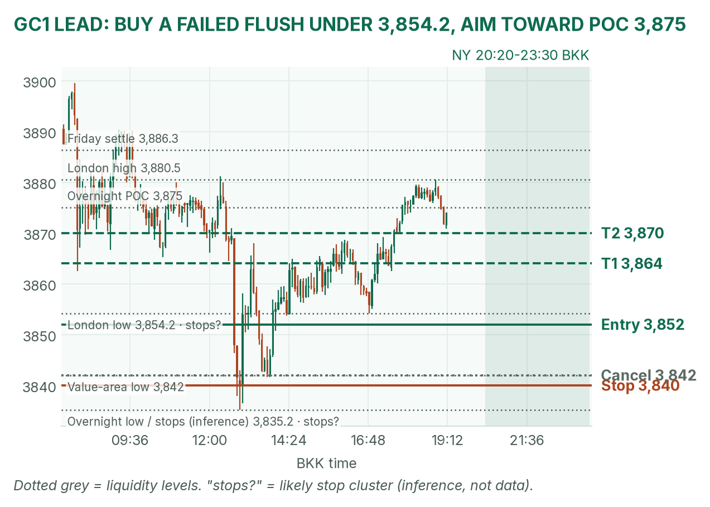
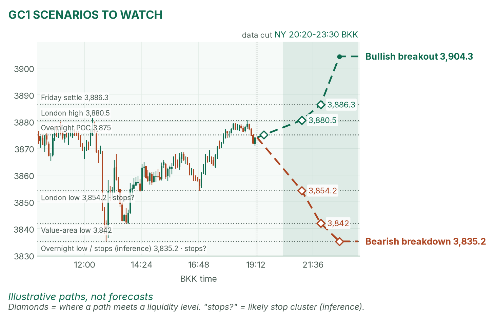

Chips bleed, the dollar climbs. Sell Nasdaq's break, buy only gold's failed flush.
Window 20:20–23:30 BKK (US winter time). Data cut 19:15 BKK: GC 3,874.0, NQ 27,655.00 (completed 5-minute bars). Backup data again: TopstepX login failed, so levels come from Yahoo Finance Dec futures bars (slightly delayed). Levels only, flat by 23:30. Ideas, not advice. April's pre-NY brief (~18:45 BKK) was read.
Summary
NQ: sell a break under 27,633.75, entry 27,610, stop 27,760, targets 27,460 and 27,385. About 35%, with the trend.
GC: buy only a failed flush under 3,854.2, entry 3,852, stop 3,840, targets 3,864 and 3,870. About 32% once filled; it fights the dollar.
No-trade zones: 20:25–20:32 (Empire State), 21:00–21:07 (Williams), 21:25–21:32 (stock open). Warsh speaks at 00:00, after we are flat.
The market story
The dollar index is at a 19-month high and traders price about a 90% chance of a December hike (April, CME FedWatch via Reuters). The 10-year yield is 5.141%, down 1.2 basis points: a pause, not a turn. High yields raise gold's opportunity cost (what you give up by holding a metal that pays nothing), so it fell to 3,835.2 before buyers pulled it back to its 3,875 POC.
Nasdaq is the weak one. Chip stocks are sliding before Nvidia's results on Tuesday (AMD −4.36%, Micron −4.35% premarket, per April), and NQ just printed a new overnight low at 27,633.75. My bias: Nasdaq down, gold neutral to soft, sitting mid-range.
News (BKK)
Time
Event
Forecast
Prior
Read
20:30
Empire State factory index
19.0
25.5
Hot (above): yields up, gold and NQ lower. Cold: small relief. Second-tier.
21:05
NY Fed's Williams (opening remarks)
–
–
Hawkish words lift the dollar.
21:30
US cash stock open
–
–
NQ's 5-minute range forms.
00:00 Tue
Fed Chair Warsh, SF Fed conference
–
–
After the window. The session decider; don't carry anything into it.
No whisper number found; past move sizes not measured this run. Source: April's brief (TD Economics, Wrightson ICAP, Federal Reserve, SF Fed).
Levels to watch
Level
GC
NQ
Friday settle (April)
3,886.3
28,034.75
Friday high / low
3,927.2 / 3,871.1
28,607.75 / 27,695.25
Overnight high (since 06:00)
3,904.3
28,279.25
London high / low (since 15:00)
3,880.5 / 3,854.2
27,853.25 / 27,633.75
Overnight POC
3,875
27,780
Overnight value area
3,842–3,878
27,660–28,170
Overnight low
3,835.2
27,633.75
Expected NY range (3-session median)
about 47 points
about 640 points
Nasdaq (NQ1)
Bias: down. NQ broke Friday's 27,695.25 low and sits on its overnight low. The NY rule: trade breakouts of the 21:30–21:35 range. After about 22:00, stay short only below VWAP (the volume-weighted average price).
The trade: bearish range breakdown
Entry
Sell stop 27,610, under the 27,633.75 overnight low, after 21:32. If the 21:30–21:35 range low is lower, use it minus 2 points and keep the 150-point stop distance.
Stop
27,760, back above Friday's low and just under the 27,780 POC
Targets
1R partial 27,460 · T2 27,385 (1.5R)
Cancel
Trades above 27,853.25 (London high) before entry, or no break by 22:30
Probability
~35%, an estimate. Basis: NQ 5-minute breakouts averaged +0.37R over 31 sessions (not significant).
Why: buyers' stops likely sit under the low and the 27,600 round number (my inference). A flush that closes back above 27,633.75 is a trap; no short then. April agrees: "the board leans toward a stronger dollar and weaker chips."

NQ 5-minute bars into 19:15. Lower highs all day, now on the low.

Illustrative paths, not forecasts.
Scenarios to watch
Mean reversion: a dip under 27,633.75 that closes back above it. Aims for the 27,780 POC, then 27,853.25.
Bullish breakout: a 5m close above 27,853.25. Aims for the 28,034.75 settle, then 28,170.
Gold (GC1)
Bias: neutral to soft. Gold sits on its 3,875 POC (the busiest price overnight), inside a 3,842–3,878 value area (where 70% of volume traded). The NY rule fades the 20:20 COMEX range back toward the POC.
The trade: buy the failed flush
Entry
3,850–3,854 (plan 3,852), after 20:32, only after a dip under the 3,854.2 London low stalls
Stop
3,840, under the 3,842 value-area low
Targets
1R partial 3,864 · T2 3,870 (1.5R), under the POC
Cancel
A 5m close below 3,842 before the fill, or no fill by 22:30
Probability
~32%, an estimate. Basis: GC NY opening ranges mostly failed and reverted in my 42-session study (not significant); buying against a rising dollar shades it down.
If the dip keeps falling toward 3,835.2, it is a breakdown, not a flush; no long. April partly agrees: gold "recovered" and sits "mid-range," but rate-hike bets still weigh.

GC 5-minute bars into 19:15. The 13:00 flush was bought back to the POC.

Illustrative paths, not forecasts.
Scenarios to watch
Bullish breakout: a 5m close above 3,880.5. Aims for the 3,886.3 settle, then 3,904.3.
Bearish breakdown: a 5m close below 3,842. Aims for the 3,835.2 overnight low, then lower.
6E (not traded): 1.1027, just above its 1.10155 London low as the dollar firms.
Before you click
ORB bases. GC NY: 20:20 COMEX open until a 2-minute candle's volume drops below half the first two's average, fade to POC. NQ NY: 21:30–21:35 range, trade breakouts. GC and 6E London: 15:00–15:30 range (fade gold, break the euro).
Checklist. 1) Room to today's max loss? 2) Within daily rules? 3) No release within 30 minutes? 4) Agrees with the bias? 5) At a marked level? 6) Setup tagged? 7) Entry, stop, 1R partial, target set? 8) Calm, not chasing?
Reset (60 seconds). Hands off the mouse. Breathe in 4, hold 4, out 6, five times. Name the feeling in one word. "Eager" or "frustrated"? Wait 5 minutes.